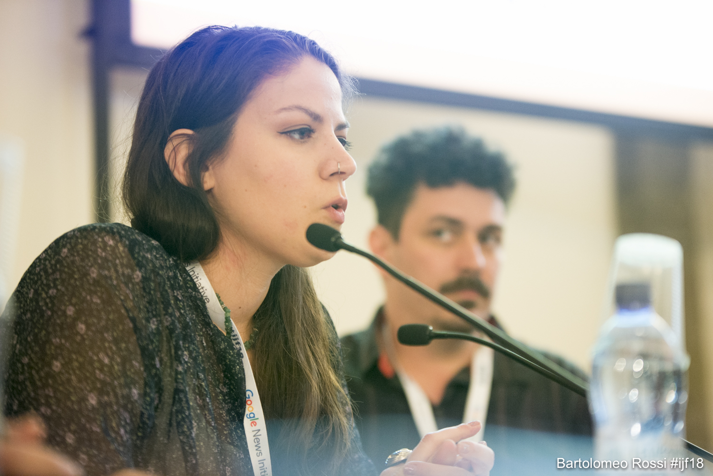
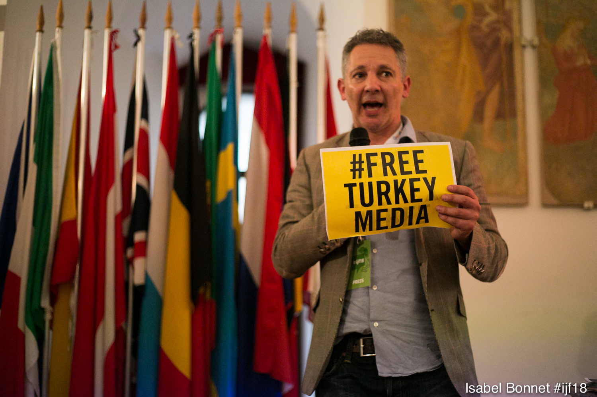

"the absolute worst would be for me to go to jail, and the thought doesn’t scare me at all" -ZEYNEP SENTEK

Somebody who is all too familiar with the crackdown on the press in Turkey is Turkish-born journalist Zeynep Sentek. Working for the independent news platform The Black Sea, Zeynep works on investigations, humas rights, workers' rights and military.
Growing up in Turkey, Zeynep speaks about how there was "diversity in the media" and "genuine mainstream newspapers.
"One could see that some were elitist, some were anti-minority, but there were at least options. Many of the reporters making up the editorship in these newspapers were of leftist/revolutionaries’ roots.
However, Zeynep never though about becoming a journalist when she was young. She began doing research for foreign journalists on Turkey and realised she wanted to do her own investigations.
"I remember reading very interesting stories in papers when I was young, not just investigations but simply interesting, that would make you keep reading. This is not to say that press was very free in Turkey before Erdogan, it wasn’t but there were options to choose. This diversity is absolutely gone now and the quality has never been this bad."

This, instead of pushing Zeynep away from journalism, only gave her more drive. "I realised the lack of quality could actually be an opportunity for me to go in and do good work and get noticed."
In regards to Zeynep's experience throughout the decline of freedom within the press, she pinpoints that it began even prior to the coup. She recalls how when she began getting into investigative journalism that things were already going bad.
"But I thought there were many stories still need to be looked into and a lot of opportunities especially if you speak English and can connect with other journalists from other countries to collaborate. Therefore, I try to use thdose avenues to do work."
In terms of affecting journalists' day-to-day working life, Zeynep highlights the factors of it being "more difficult to do work but also to get it re-reported in Turkish media.
"Many of our stories aren’t picked up in Turkey because govt-associated media obviously don’t report them and the opposition media is also too scared. We try to break this but it’s not easy. When they do re-report it they can skew facts, not properly edit it, which in turn can result in incompetency, which is another huge issue."
Sadly though, there are deeper concequences that the crackdown on the press has caused. Mostly living outside of Turkey now, Zeynep "doesn't feel the repression everyday". Despite not affecting herself directly, its her family that live in fear more-so. She says that her family "are always scared that they will come looking for me.
"They have papers and phones, clothes, the essentials, always ready by their bed. This is because the Turkish police tend to do dawn raids. But this is a bit too much so I tell them to calm down, but they’re parents after all!"
Regarding her profession, Zeynep speaks on how not only has the decline in freedom of press affected her career and families day-to-day living, but also the content produced that is being printed within Turkey. She says that she find it "Very frustrating to read Turkish newspapers to see sloppy reporting and see journalists losing their ethics and disregarding any professional standards while doing a story. Newspapers don’t care anymore about good journalism. Nothing is fact-checked or properly edited." This isn't just the opposition media that still exists within Turkey, but is also applies to the government-associated media. This is because "both sides of the spectrum carry out their agenda to the expense of journalism".
To overcome these issues, Zeynep acknowledges these and manoeuvres in the system just slightly from the outside, and "produces high standard work where the story is checked numerous times, edited well and written in a narrative form." Although these factors no longer exist in Turkish journalism anymore, Zeynep and her publication "try to revive it in our own way".
"But we are very small and have very little resources. On top of this, if we do a big story (like the Malta Files) we are attacked for being foreign agents or terrorist because we are small. They don’t believe that we could be digging out big stories without some intelligence agencies help. It’s insane, but this is Turkey."
"Overall, things are difficult not only because there is repression, but a lot of practicalities make this kind of working daily life a complex mess."